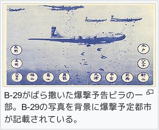

昭和十九年文化服装学院に入学、月曜日には、皆揃って明治神宮に戦勝祈願をこめて参拝いたしました。 二ヶ月くらいは授業は順調で、お休みの日五、六人で遠藤学院長のお宅でミシンの故障の直し方等お教え頂きました。 皆お揃いの上下の標準服を作りました。 小田急が出ないとの事で甲州街道を京王線沿いに学校まで歩いた事もありました。
二ヶ月過ぎてからは軍隊の白い敷布を縫い始めました。 三ヶ月頃になって先生から大事なお話がございました。 立会川の海軍衣料廠(しょう)に行くことになりましたので、皆様お国の為頑張ってくださいますようにとのお言葉でした。 皆勝つまでは頑張りましょうと誓いました。
祖師谷、新宿、品川、立会川で降りて三分ぐらい歩くと桟橋を渡ります。 海軍衣料廠はすべて軍隊式の駆け足で集合、朝礼、訓示、作業となります。 校訓そのままに祖国のため同胞のため、洋裁技術をいかしながら全力を尽くしておりました。 飛行服の穴かがり、戦闘帽、肩章、セーラー衿(コン、えり)、水兵服、作業着、私は作業着の裾の三つ巻の役でした。 朝九時から夕方五時まで、一週間位は、なれない仕事なので皆くたくたでした。 週一度は学校へ戻って授業を受けておりました。 代々木の学校は軍需工場さながらの光景でありました。
傷病兵の白衣作り、布団作り、落下傘の縫製、苦心惨憺(さんたん)してお金を集め、三機もの戦闘機を献納致しました。 文化服装学院号。 日が経つにつれ仕事にもなれてきました。
朝、品川からち立会川まで軍需エ場が多く、買出しの方等で乗るのが大変でした。 帰り、乗れない時は品川まで歩くことに致しました。 秋近く道端には雑草にまじり野菊も咲いておりました。 「皆、秋はわびしいわね。私達みたいね」と言っておりました。
品川駅にようやっと着きました。 祖師谷の駅には遅いので父が心配して来ておりました。 年が明けてからは空襲警報の度に防空壕へ、解除になると、外に出て岸壁に立ってはるかかなたを見ますと、敵か味方か飛行機が落ちていくのが見えました。 少したってまた仕事です。
何日かたって私も体調が悪くなり軍医さんに見ていただきました。 心臓脚気と診断されまして一週間注射をして頂きすっかり良くなり、また仕事に戻りました。 家の方でも、父が防空壕を庭に作り大切な物を入れ、母も国防婦人会でバケツリレーで火を消す練習をし、兄が戦地に行っておりますのでお隣の竹屋さんの次女の方に、千人針をお願いして度々送っておりました。 祖師谷でも戦死された方が多く、義兄も南方で戦死致しております。
年が明けてからも戦局は思ったより悪く、物資も残り少なくなり海軍士官が北海道に訓達に行く事になりました。 私達は桟橋に並んで見送りました。(女学校の時も体育は軍人が来て軍隊式整列でしたのに)海軍衣料廠で皆頑張って三月の卒業は無事出来ました。 研究科に入学するつもりでしたが、家の方も大変でしたので一時やめました。
学校が五月二十五日夜半の東京大空襲で炎上、五月二十六日には宮殿も炎上なされたとの事、私達の家の方も軍需工場がありましたので、六月に入ってからB29が空からビラをまいておりました。 近くなのでひろってまいりました。 ハガキより少し大き目のワラ半紙に「イマコウフクシナイト ニホンヲゼンメツニスルゾ」と書いてありました。 未だに覚えております。
六月二十八日には軍需工場に落とした焼夷弾が風に乗って私の家の前に一列に落ちました。 前の家は藁(わら)葺き屋根でしたので全焼、隣は垣根から燃えだし、私達は母と消し止めました。 防空壕に二人のお年寄りが入っておりましたが、真ん中を突き抜けていったそうです。 並びのお菓子屋さんはお店の真ん中で消し止めたそうです。 私の家は無事でした。
終戦後直ぐに学校に行って見る事にしました。 新宿で降り甲州街道に出ました。 右も左も焼け野原で、京王線沿いにある学校に着きました。 全焼です。 勤労奉仕の時を思い出し涙が自然に出てきました。
焼け跡に立て看板で研究科の方は野口先生のお宅で授業と書いてありましたので、翌日玉電に乗り先生のお宅に伺いして皆様と少しお話しをして帰りました。 終戦まで皆様は代々木の作業場で作業をしていたそうです。 一つ目標を遠藤学院長におき、復興までのあらゆる困難は筆舌に尽くせないものであったと聞いております。
五十四年十一月
三笠宮殿下をはじめ各界から多数列席
五十四年十一月
皇太子妃殿下来校される。
遠藤記念館並びに服飾博物館を機に来校されました。
激動の青春時代を過ごした皆様の犠牲があってこそ今日の平和がありますので、平和の大切さを若い方々に護って頂きたくお願い致します。
爆撃予告ビラ

アメリカ軍は爆撃予告ビラを作成、B-29によって全国32都市へばら撒いたとされ、約半数の都市を実際に爆撃した。 日本国民に向けた声明とB-29が爆撃をする予定の都市を記したもの、爆撃後の日本国民の惨状を文章と絵で示したものなどがあった。
B-29がばら撒いた爆撃予告のビラは「内務省令第6号 敵の図書等に関する件」により、 拾っても中身を読まずに警察・警防団に提出することが国民の義務とされ、「所持した場合3か月以上の懲役、又は10円以下の罰金。 内容を第三者に告げた場合、無期又は1年以上の懲役」という罰則が定められていた。
住んでいる都市が爆撃予定にされていることを知ったとしても、役所から「避難者は一定期日までに復帰しなければ、配給台帳から削除する」などと告知され、避難先から帰還する者が多くいたため、実際に爆撃された場合、被害が広がった。
引用: フリー百科事典 Wikipedia